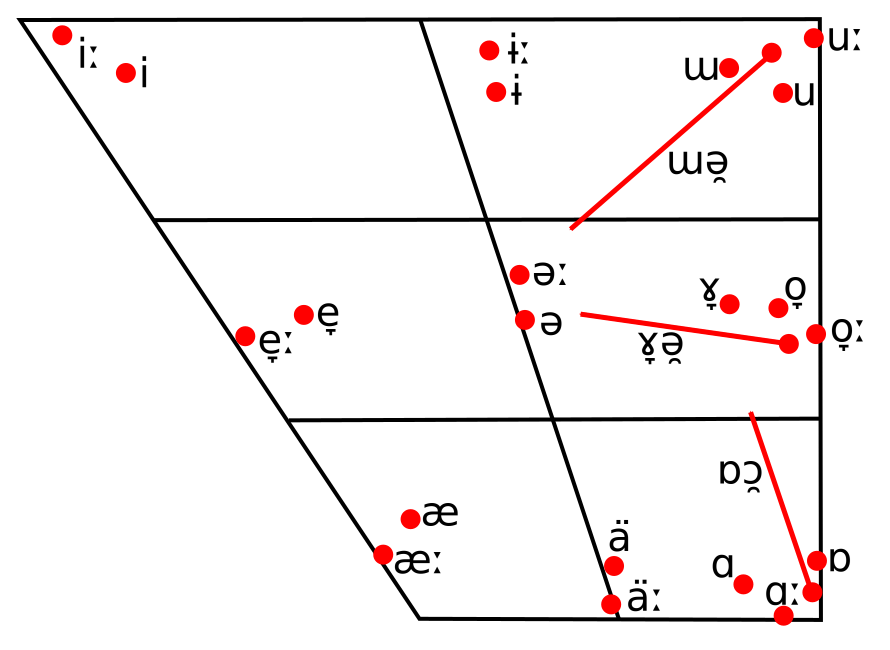

Go To Star Folk Topics Index
Star Folk Language Phonology
Consonants
Phonemic Inventory
|
Labial |
Alveolar |
Palatal |
Velar/Uvular |
Pharyngeal |
| Plain |
Labial |
| Occlusive |
Aspirated |
pʰ
⟨p⟩
|
tʰ
⟨t⟩
|
cʰ
⟨c⟩
|
kʰ
⟨k⟩
|
kʷʰ
⟨ḱ⟩
|
|
| Glottalic |
pʼ
⟨b⟩
|
tʼ
⟨d⟩
|
cʼ
⟨j⟩
|
kʼ
⟨g⟩
|
kʷʼ
⟨ǵ⟩
|
|
| Nasal |
m
⟨m⟩
|
n
⟨n⟩
|
ɲ
⟨ń⟩
|
ŋ
⟨ŋ⟩
|
ŋʷ
⟨ḿ⟩
|
|
| Fricative |
ɸ
⟨f⟩
|
s
⟨s⟩
|
|
x
⟨x⟩
|
xʷ
⟨ẋ⟩
|
ħ
⟨h⟩
|
| Approximant |
|
ɹ
⟨r⟩
|
j
⟨y⟩
|
|
w
⟨w⟩
|
ʕ
⟨ŕ⟩
|
Allophony
Velar/Uvular Consonants
| Phoneme |
Before /a/ and /aː/ |
Elsewhere |
| /kʰ/ |
[qʰ] |
[kʰ] |
| /kʼ/ |
[qʼ] |
[kʼ] |
| /ŋ/ |
[ɴ] |
[ŋ] |
| /x/ |
[χ] |
[x] |
| /kʷʰ/ |
[qʷʰ] |
[kʷʰ] |
| /kʷʼ/ |
[qʷʼ] |
[kʷʼ] |
| /ŋʷ/ |
[ɴ͡mʷ] ~ [ɴʷ] ~ [w̠̃] |
[ŋ͡mʷ] ~ [ŋʷ] ~ [w̃] |
| /xʷ/ |
[χʷ] |
[xʷ] |
| /w/ |
[w̠] |
[w] |
Palatal Consonants
Palatal nasal /ɲ/ can be realized between [ɲ] ~ [j̃].
Fricatives (Late Eastern Dialects)
| Phoneme |
Between Voiced Sounds |
Elsewhere |
| Near Palatal Sounds |
Elsewhere |
Near Palatal Sounds |
Elsewhere |
| /ɸ/ |
[β] |
[ɸ] |
| /s/ |
[z] |
[s] |
| /x/ |
[ɣ] or [ʝ] or [ʑ] |
[ɣ] |
[x] or [ç] or [ɕ] |
[x] |
| /xʷ/ |
[ɣʷ] or [ʝʷ] or [ʑʷ] |
[ɣʷ] |
[xʷ] or [çʷ] or [ɕʷ] |
[xʷ] |
| /ħ/ |
[ħ] |
[ħ] or [ʕ] |
Vowels
Phonemic Inventory
|
Short |
Long |
| Closed |
i
⟨i⟩
|
iː
⟨é⟩
|
| Mid |
e
⟨e⟩
|
eː
⟨é⟩
|
| Open |
a
⟨a⟩
|
aː
⟨á⟩
|
Allophony
| Environment |
/a/ |
/aː/ |
/e/ |
/eː/ |
/i/ |
/iː/ |
| After Palatal And Pharyngeal Consonants |
[æ] |
[æː] |
[e̞] |
[e̞ː] |
[i] |
[iː] |
| After Plain Velar/Uvular Consonants |
[ɑ] |
[ɑː] |
[ɤ̞] |
[ɤ̞ə̯] |
[ɯ] |
[ɯə̯] |
| After Labialized Velar/Uvular Consonants |
[ɒ] |
[ɒɔ̯] |
[o̞] |
[o̞ː] |
[u] |
[uː] |
| Elsewhere |
[ä] |
[äː] |
[ə] |
[əː] |
[ɨ] |
[ɨː] |
Vowel Trapezoid

Phonotactics
| Outer Onset |
Medial Onset |
Inner Onset |
Nucleus |
Inner Coda |
Outer Coda |
|
|
- Aspirated
- Fricative
- Nasal
- ∅
|
|
|
|
|
|
|
- Glottalic
- Fricative
- Nasal
- ∅
|
|
|
|
|
|
- Aspirated
- Fricative
- Nasal
- ∅
|
|
|
|
|
|
- Glottalic
- Fricative
- Nasal
- ∅
|
|
|
|
Double consonants not allowed. Onset has precedence over coda
in syllable separation.